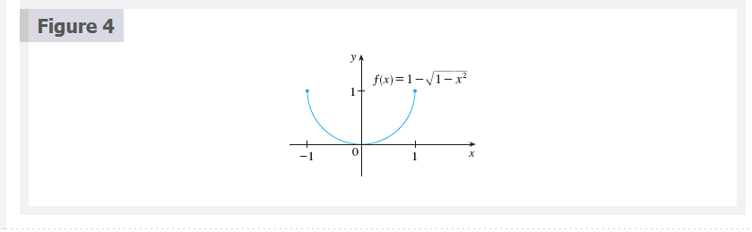
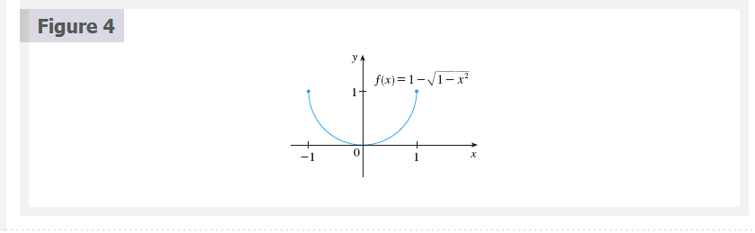
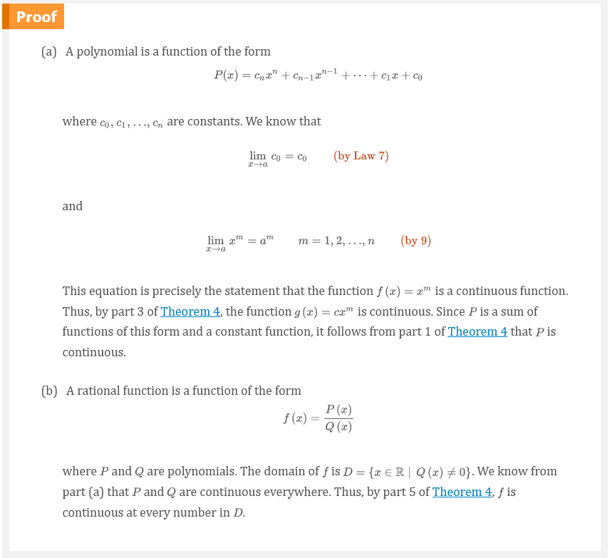
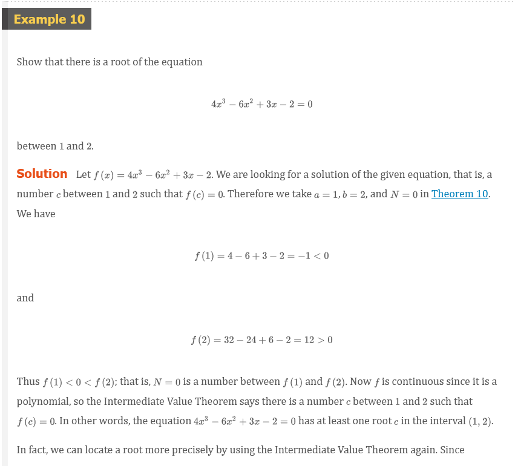
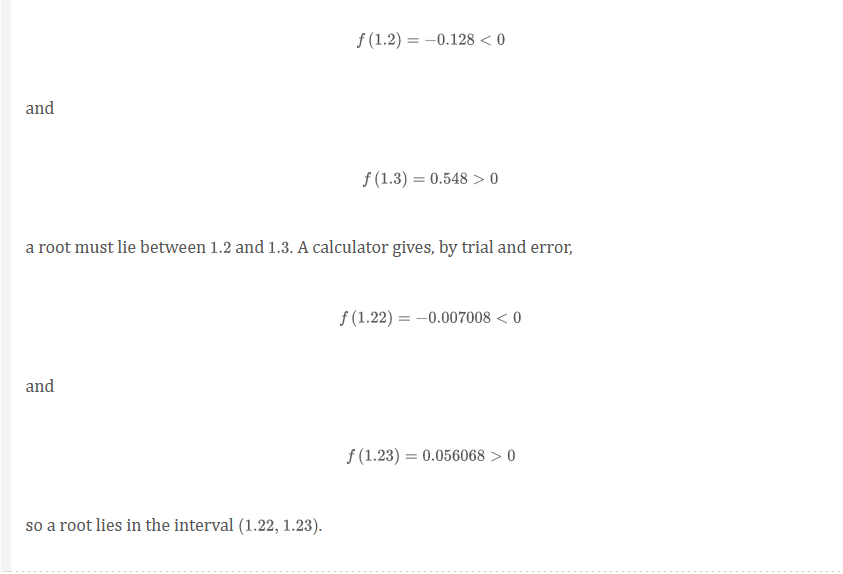

Chapter 2.5: Continuity
1 Definition
A function \(f\) is continuous at a number a if
\[ \lim_{x \to a} f(x) = f(a) \]
Three things if \(f\) is continuous at \(a\):
- \(f(a)\) is defined (that is, \(a\) is in the domain of \(f\))
- \(\lim_{x \to a} f(x)\) exists
- \(\lim_{x \to a} f(x) = f(a)\)


2 Definition
A function \(f\) is continuous from the right at a number a if
\[ \lim_{x \to a^{+}} f(x) = f(a) \]
and \(f\) is continuous from the left at a if
\[ \lim_{x \to a^{-}} f(x) = f(a) \]

 

3 Definition
A function \(f\) is continuous on an interval if it is continuous at every number in the interval. (if \(f\) is defined only on one side of an endpoint of the interval, we understand continuous at the endpoint to mean continuous from the right or continuous from the left)
Video Lectures:
4 Theorem
If \(f\) and \(g\) are continuous at \(a\) and \(c\) is a constant, then the following functions are also continuous at a:
- \(f + g\)
- \(f - g\)
- \(cf\)
- \(fg\)
- \(\frac{f}{g}\) if \(g(a) \neq 0\)
5 Theorem
Any polynomial is continuous everywhere; that is continuous on \(\mathbb{R} = (-\infty, \infty)\).
Any rational function is coninouos whereever it is defined; that is, it is continuous on its domain.
 
7 Theorem
The following types of functions are continuous at every number in their domains:
- polynomials
- rational functions
- root functions
- trigonometric functions
- inverse trigonometric functions
- exponential functions
- logarithmic functions

8 Theorem
If \(f\) is continuous at \(b\) and \(\lim_{x \to a} g(x) = b\), then \(\lim_{x \to a} f(g(x)) = f(b)\). In other words,
\[ \lim_{x \to a} f(g(x)) = f(\lim_{x \to a} g(x)) \]
Note: this theorem says that a limit symbol can be moved through a function symbol if the function is continuous and the limit exists. In other words, the order of these two symbols can be reversed.
9 Theorem
If \(g\) is continuous at \(a\) and \(f\) is continuous at \(g(a)\), then the composite function \(f \circ g\) given by \(f \circ g)(x) = f(g(x))\) is continuous at \(a\).


10 The Intermediate Value Theorem
Suppose that \(f\) is continuous on the closed interval \([a, b]\) and let \(N\) by any number between \(f(a)\) and \(f(b)\), where \(f(a) \neq f(b)\). Then there exists a number \(c\) in \((a, b)\) such that \(f(c) = N\).
  
Video Lectures
- 📺 Types of discontinuities
- 📺 Continuity at a point
- 📺 Worked example: Continuity at a point(graphical)
- 📺 Worked example: point where a function is continuous
- 📺 Worked example: point where a function isn’t continuous
- 📺 Continuity over an interval
- 📺 Functions continuous on all real numbers
- 📺 Functions continuous at specific x-values
- 📺 Removing discontinuities (factoring)
- 📺 Removing discontinuities (rationalization)
Resources
- 📺 Types of discontinuities
- 📺 Continuity at a point
- 📺 Worked example: Continuity at a point(graphical)
- 📺 Worked example: point where a function is continuous
- 📺 Worked example: point where a function isn’t continuous
- 📺 Continuity over an interval
- 📺 Functions continuous on all real numbers
- 📺 Functions continuous at specific x-values
- 📺 Removing discontinuities (factoring)
- 📺 Removing discontinuities (rationalization)